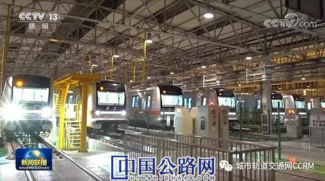

您好，欢迎来到中国高速公路网—21世纪公路网！
 来源：城市轨道交通网CCRM
来源：城市轨道交通网CCRM
 时间：2020-12-02
时间：2020-12-02
预计到今年年底，内地开通城市轨道交通的数量将达到44个，在建城市将达到60个。“十三五”期间，我国城市轨道交通完成投资额持续增长，预计到2020年底将超过2.6万亿元，完成客运总量约为960亿人次。
央视《新闻联播》11月25日以《我国城市轨道交通发展迅速》为题，用3分30秒黄金时间为城市轨道交通发展点赞。
报道全文如下：
“十三五”成就巡礼之《我国城市轨道交通发展迅速》
“十三五”期间，我国城市轨道交通新增运营里程4000公里，发展迅速，在满足人民群众交通出行、缓解城市交通拥堵、促进经济社会发展方面发挥了重要作用。已成为改善城市居民生活品质、提升人民群众获得感幸福感的重要载体。
这几天，北京市地铁房山线北延段、地铁 16号线中段，正在进行试运营，有望年底前通车。届时，北京房山区的百姓进入中心城区将更加方便。
快速发展的轨道交通，让在北京等超大城市生活的人出行更便捷。特别是连接郊区和中心城区的城铁，已经成为上班族通勤的首选。
在北京，每天有超过一千万人次乘坐地铁通勤。到今年年底，随着北京地铁16号线中段和房山线北延段的开通运营，北京市的轨道交通运营里程将超过700公里，网络运输能力和运营服务品质显著提升。
北京市地铁运营有限公司党委书记、董事长谢正光：
“十三五”期间，北京地铁新开通运营里程161公里，整个线网的运营里程已经达到715公里，最高的日客运量达到1328万人次。其中11条线路的行车间隔已经达到两分钟，北京市民出行更加便捷，出行的体验也更加舒适。
“十三五”期间，我国在城轨交通的核心技术突破上，取得了骄人的成绩。北京郊区的燕房线，外表看上去与普通地铁并没有太大区别，但是对中国地铁的发展，却有着里程碑一般的意义。
中国城市轨道交通协会专家和学术委员会执行副主任仲建华：
燕房线是具有完全自主的知识产权，在中国的话是第一条全自动运行的轨道交通系统，是目前世界上在列车运行的自动化等级方面来看，是按最高的级别来进行设计和建造的。

燕房线全线已经安全运营一年多，实现了列车的一系列自动操作，比如说上下坡的运行，转弯时候的速度控制，以及列车进站的精准停车和自动开闭车门等等。燕房线建成后，我国有更多城市的在建地铁，选择了我国自主设计的全自动运行系统。中国城市轨道装备的科技水平跻身世界一流。
北京地铁的发展是我国城市轨道交通发展的一个缩影。“十三五”期间，上海、北京、广州的城市轨道交通运营里程已位居世界前三，形成了庞大的城市轨道交通路网。深圳、成都、南京等城市建设规模持续增长。在部分城市，城轨交通已经承担了公共交通50%以上的运输量。
中国城市轨道交通协会常务副会长周晓勤：
“十三五”期间，我国城市轨道交通运营里程的增长率约为110%。“十三五”期间我国增加的城轨公里数，超过过去五十多年建成公里数的总和。
预计到今年年底，内地开通城市轨道交通的数量将达到44个，在建城市将达到60个。“十三五”期间，我国城市轨道交通完成投资额持续增长，预计到2020年底将超过2.6万亿元，完成客运总量约为960亿人次。
交通运输部运输服务司城市轨道处处长耿晋军：
“十三五”期间，我国持续优化城市轨道交通网络，优化城市公共交通体系。到2020年底，服务人口规模达到3.9亿。城市轨道交通逐渐成为大城市人民群众日常出行的首选。
【编辑：王珏 QQ：1485994861；TEL：13810405128/010-84990788—1369】
【审核：耿茁、孙婧】
 微信公众号
微信公众号
 微信订阅号
微信订阅号